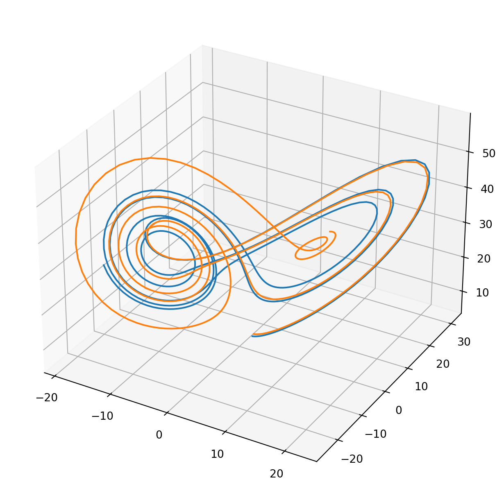

Code
import numpy as npclass L63():
def __init__(self):
self.p = 10.0 # prandtl number
self.r = 32.0 # rayleigh number
self.b = 8.0/3.0 # aspect ratio
self.dt = 0.01
def __call__(self,w):
x, y, z = w
dw = np.zeros_like(w)
dw[0] = -self.p * x + self.p * y
dw[1] = -x * z + self.r * x - y
dw[2] = x * y - self.b * z
return w + dw * self.dt
def tlm(self,wb,wt):
xb, yb, zb = wb
xt, yt, zt = wt
dw = np.zeros_like(wt)
dw[0] = -self.p * xt + self.p * yt
dw[1] = (self.r - zb)*xt - yt - xb*zt
dw[2] = yb*xt + xb*yt - self.b * zt
return wt + dw * self.dt
def adj(self,wb,wt):
xb, yb, zb = wb
xt, yt, zt = wt
dw = np.zeros_like(wt)
dw[0] = -self.p * xt + (self.r - zb)*yt + yb*zt
dw[1] = self.p * xt - yt + xb*zt
dw[2] = - xb*yt - self.b * zt
return wt + dw * self.dtimport matplotlib.pyplot as plt
model = L63()
nstep = 500
w1 = np.zeros((nstep+1,3))
w2 = np.zeros((nstep+1,3))
w1[0,:] = 1.0,3.0,5.0
w2[0,:] = 1.1,3.3,5.5
for i in range(nstep):
w1[i+1,] = model(w1[i])
w2[i+1,] = model(w2[i])
fig = plt.figure(figsize=[8,8])
ax = fig.add_subplot(projection="3d")
ax.plot(*w1.transpose())
ax.plot(*w2.transpose())
plt.show()
model = L63()
# TLM check
w0 = np.random.randn(3)
dw0 = np.random.randn(3)*0.1
alp = 1.0e-5
wp = model(w0+alp*dw0)
wb = model(w0)
dw = model.tlm(w0,dw0)
ratio = np.sqrt(np.dot((wp-wb),(wp-wb)))/alp/np.sqrt(np.dot(dw,dw))
print(f"|M(x+a*dx)-M(x)|/|a*TLM*dx|={ratio}")
# ADJ check
MtMw = model.adj(w0,dw)
print(f"(Mx)^T(Mx)-x^TM^TMx={np.dot(dw,dw)-np.dot(dw0,MtMw)}")|M(x+a*dx)-M(x)|/|a*TLM*dx|=1.0000000008559033
(Mx)^T(Mx)-x^TM^TMx=0.0# initialize
alpha=1.0e-5
dw = np.random.randn(3)
dw = dw * alpha / np.sqrt(np.dot(dw,dw))
niter=0
while(True):
dwp = dw.copy()
# forward integration
dw = model.tlm(wb,dw)
# backward integration
dw = model.adj(wb,dw)
# rescaling
dw = dw * alpha / np.sqrt(np.dot(dw,dw))
# convergence evaluation
diff = np.sqrt(np.dot((dw-dwp),(dw-dwp)))
niter+=1
print(f"iter:{niter}, diff={diff:.3e}")
if diff/alpha<1.0e-6: break
print(dw/alpha)iter:1, diff=2.450e-06
iter:2, diff=2.557e-06
iter:3, diff=2.135e-06
iter:4, diff=1.540e-06
iter:5, diff=1.058e-06
iter:6, diff=7.428e-07
iter:7, diff=5.475e-07
iter:8, diff=4.226e-07
iter:9, diff=3.365e-07
iter:10, diff=2.725e-07
iter:11, diff=2.225e-07
iter:12, diff=1.822e-07
iter:13, diff=1.495e-07
iter:14, diff=1.226e-07
iter:15, diff=1.006e-07
iter:16, diff=8.254e-08
iter:17, diff=6.770e-08
iter:18, diff=5.552e-08
iter:19, diff=4.553e-08
iter:20, diff=3.733e-08
iter:21, diff=3.061e-08
iter:22, diff=2.510e-08
iter:23, diff=2.058e-08
iter:24, diff=1.687e-08
iter:25, diff=1.383e-08
iter:26, diff=1.134e-08
iter:27, diff=9.296e-09
iter:28, diff=7.621e-09
iter:29, diff=6.248e-09
iter:30, diff=5.123e-09
iter:31, diff=4.200e-09
iter:32, diff=3.443e-09
iter:33, diff=2.823e-09
iter:34, diff=2.314e-09
iter:35, diff=1.897e-09
iter:36, diff=1.555e-09
iter:37, diff=1.275e-09
iter:38, diff=1.045e-09
iter:39, diff=8.571e-10
iter:40, diff=7.027e-10
iter:41, diff=5.761e-10
iter:42, diff=4.723e-10
iter:43, diff=3.872e-10
iter:44, diff=3.174e-10
iter:45, diff=2.602e-10
iter:46, diff=2.134e-10
iter:47, diff=1.749e-10
iter:48, diff=1.434e-10
iter:49, diff=1.176e-10
iter:50, diff=9.638e-11
iter:51, diff=7.902e-11
iter:52, diff=6.478e-11
iter:53, diff=5.311e-11
iter:54, diff=4.354e-11
iter:55, diff=3.570e-11
iter:56, diff=2.927e-11
iter:57, diff=2.399e-11
iter:58, diff=1.967e-11
iter:59, diff=1.613e-11
iter:60, diff=1.322e-11
iter:61, diff=1.084e-11
iter:62, diff=8.886e-12
[-0.59253212 -0.76624265 0.24855156]